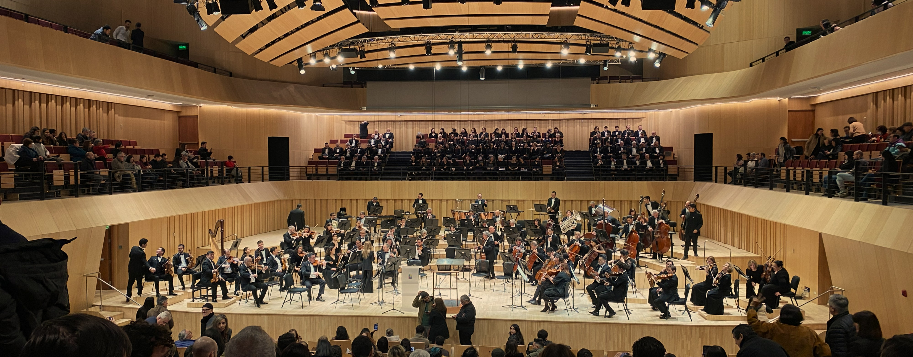

Música clásica favorita
musica
Piezas de música clásoca que más me gustan

Esta es una selección personal de obras del repertorio clásico que más disfruto. La tabla se puede ordenar por cualquier columna y filtrar por búsqueda o época.
| Obra ↕ | Compositor ↕ | Estreno ↕ | Época ↕ | País ↕ | Escuchar |
|---|